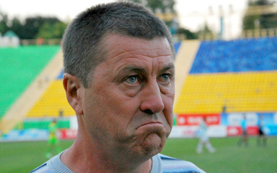
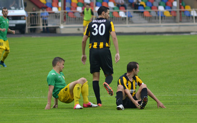

КЛУБНЕ ЖИТТЯ

Тут місце для інформації про дату і час опублікування новини, кількість переглядів
Якщо тут буде більше тексту ніж висота зображення, то зображення залишиться в лівому верхньому кутку, а жовта нижня лінія посунеться. Хоча всерівно не варто зловживати цим місцем і давати сюди багато тексту, так одне-два речення (наприклад, те що зараз в повній новині виділяється як перший абзац жирним шрифтом.

Тут місце для інформації про дату і час опублікування новини, кількість переглядів
"Нива" розпочала тренування у Микулинцях. Сюжет ТВ-4.

Тут місце для інформації про дату і час опублікування новини, кількість переглядів
У рамках підготовки до відновлення чемпіонату Першої ліги та чвертьфіналу Кубка України 22 березня "Нива" зіграє товариський поєдинок у Стрию.

Тут місце для інформації про дату і час опублікування новини, кількість переглядів
Сьогодні, 19 березня, на стадіоні у Микулинцях "Нива" обіграла учасника чемпіонату Тернопільської області — "Ниву" з Теребовлі з рахунком 3:0.